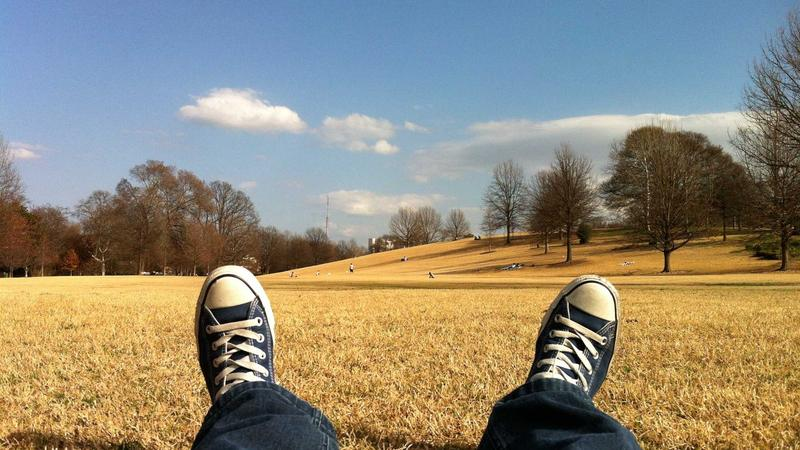

전북도, 반도체 소재 기업 간담회…경쟁력 강화 방안 모색

전라북도가 반도체 소재산업의 경쟁력을 끌어올리기 위한 본격적인 행보에 나섰다. 도는 최근 도내 반도체 소재 관련 기업과 연구기관 관계자들을 초청해 현안 간담회를 열고, 산업 현장의 목소리를 직접 듣는 시간을 가졌다.
이번 간담회에는 전북 지역 반도체 소재 기업 20여 곳과 전북대, 군산대, 한국탄소산업진흥원 등 관련 연구기관 관계자들이 참석했다. 참석자들은 원자재 수급 불안, 연구개발 자금 부족, 전문 인력 확보 어려움 등 다양한 현안을 제기했다.
전북도의 반도체 소재산업 육성 의지는 이미 앞서 익산 반도체 소재 클러스터 조성 계획으로 구체화된 바 있다. 익산 클러스터는 특수 화학 소재, 초순수, 전자 세정제 등 반도체 공정 소재 전문 기업들의 집적을 목표로 하고 있으며, 향후 3년간 2,500억 원 이상의 투자를 유치한다는 목표를 세우고 있다.
전북도는 이번 간담회를 통해 기업들이 실질적으로 필요한 지원 내용을 파악했다. 기업들은 ▲소재 품질 인증 비용 지원 ▲반도체 대기업과의 매칭 프로그램 강화 ▲지역 내 소재 테스트베드 구축 ▲전문 인력 양성 프로그램 확대 등을 주요 요구사항으로 제시했다.
도 관계자는 '기업들이 지적한 문제 중 상당수는 중앙 정부 지원만으로 해결이 어려운 부분이 있다'며 '지자체 차원에서 추가 예산을 편성하고, 기업 맞춤형 지원 체계를 빠르게 마련하겠다'고 밝혔다.
전북 지역 반도체 소재 산업의 현황을 살펴보면, 현재 도내에서 반도체 소재를 생산하거나 관련 서비스를 제공하는 기업은 약 45개에 달한다. 이들 기업의 연간 매출 합계는 약 3,200억 원 수준으로, 전국 반도체 소재 산업 매출의 약 2.5%를 차지하고 있다.
전북도는 이 비중을 2030년까지 5% 이상으로 높이겠다는 목표다. 이를 위해 신규 기업 유치와 기존 기업 성장 지원을 병행하는 이원화 전략을 펼칠 계획이다. 특히 서울·수도권 소재 반도체 소재 스타트업의 전북 이전을 유도하기 위한 인센티브 패키지도 준비 중이다.
업계 전문가들은 지방 반도체 소재 클러스터의 성공 열쇠로 '대기업과의 연결고리'를 꼽는다. 한국반도체산업협회 관계자는 '지방 소재 기업이 아무리 좋은 기술을 개발해도, 삼성·SK하이닉스 등 대기업의 밸류체인에 편입되지 못하면 성장에 한계가 있다'며 '중앙·지방정부와 대기업이 함께하는 매칭 플랫폼이 필요하다'고 조언했다.
전북도는 내년부터 도내 반도체 소재 기업과 대기업 반도체 제조사를 연결하는 '소재 파트너십 프로그램'을 운영할 계획이다. 이를 통해 기술 협력, 시제품 납품 테스트, 공급망 편입 등을 단계적으로 지원한다는 구상이다.
인력 양성 측면에서는 전북대와 군산대에 반도체 소재 특화 학과 신설 및 산학협력 과정 확대가 논의되고 있다. 현재 전북 지역 내 반도체 소재 분야 전문 인력은 연간 공급량이 수요의 60% 수준에 불과해 인력 부족이 고질적인 문제로 꼽혀왔다.
글로벌 공급망 재편 흐름 속에서 지방 반도체 소재 클러스터의 중요성은 더욱 커지고 있다. 수도권 집중 리스크를 분산하고, 지역 경제 활성화와 일자리 창출을 동시에 달성할 수 있다는 점에서 정부도 지방 소재 클러스터 지원에 관심을 기울이고 있다.
향후 전북도는 기업 간담회 결과를 바탕으로 종합 지원 계획을 수립해 연내 발표할 예정이다. 도는 반도체 소재 산업을 미래 전략 산업으로 지정하고, 관련 예산을 내년도 본예산에 반영할 방침이다. 기업들의 현장 목소리가 실질적인 정책으로 이어질지 귀추가 주목된다.